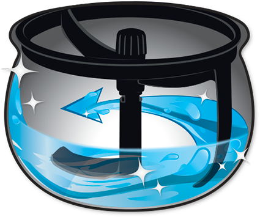

<section class="self-clean">
    <h3 class="self-clean__title with-title-borders">
        Самостоятельно перемешивает и...<br>
        даже моет!
    </h3>
    <div class="self-clean__content">
        <div class="self-clean__text_box">
            <h4 class="self-clean__text_caption">
                Все просто:
            </h4>
            <ul>
                <li class="self-clean__text">
                    1) Установите специальную насадку
                </li>
                <li class="self-clean__text">
                    2) Залейте воду
                </li>
                <li class="self-clean__text">
                    3) Включите режим самоочистки
                    Вращающаяся лопатка не оставит никаких 
                    шансов прилипшим кусочкам пищи
                </li>
            </ul>
        </div>
        
    </div>
</section>